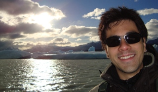

e-mail: leouieda at gmail dot com
I'm a geophysics PhD student working on potential field inversion at the Observatório Nacional, Rio de Janeiro, Brazil. I'm currently a member of the IAG Joint Working Group JWG2.8: Modeling and Inversion of Gravity-Solid Earth Coupling. My interests are inverse problems, open source software, and Northern Shaolin Kung Fu.
You can also use my Mendeley profile to download the full text PDFs and my figshare profile for presentations, videos, posters, data, etc.
Uieda, L., and V. C. F. Barbosa (2012), Robust 3D gravity gradient inversion by planting anomalous densities, Geophysics, 77(4), G55-G66, doi:10.1190/geo2011-0388.1. [pdf] [supplement] [animation]
Oliveira Jr., V. C., V. C. F. Barbosa, and L. Uieda (2012), Polynomial equivalent layer, Geophysics, 78(1), G1–G13, doi:10.1190/geo2012-0196.1. [pdf]
Uieda, L., and V. C. F. Barbosa (2012), Use of the "shape-of-anomaly" data misfit in 3D inversion by planting anomalous densities, SEG Technical Program Expanded Abstracts, pp. 1–6, doi:10.1190/segam2012-0383.1. [pdf] [slides]
Carlos, D. U., L. Uieda, Y. Li, V. C. F. Barbosa, M. A. Braga, G. Angeli, and G. Peres (2012), Iron ore interpretation using gravity-gradient inversions in the Carajás, Brazil, SEG Technical Program Expanded Abstracts, pp. 2008–2012, doi:10.1190/segam2012-0525.1. [pdf] [slides]
Uieda, L. and V. C. F. Barbosa (2012), Rapid 3D inversion of gravity and gravity gradient data to test geologic hypotheses, International Symposium on Gravity, Geoid and Height Systems. [abstract + slides]
Uieda, L., and V. C. F. Barbosa (2011), Robust 3D gravity gradient inversion by planting anomalous densities, SEG Technical Program Expanded Abstracts, vol. 30, pp. 820–824, doi:10.1190/1.3628201. [pdf] [slides]
Uieda, L., and V. C. F. Barbosa (2011), 3D gravity gradient inversion by planting density anomalies, 73th EAGE Conference & Exhibition incorporating SPE EUROPEC, pp. 1–5. [pdf] [poster]
Uieda, L., and V. C. F. Barbosa (2011), 3D gravity inversion by planting anomalous densities, SBGf 2011 Expanded Abstracts, pp. 1–5. [pdf] [slides]
Uieda, L., E. P. Bomfim, C. Braitenberg, and E. Molina (2011), Optimal forward calculation method of the Marussi tensor due to a geologic structure at GOCE height, Proc. of 4th International GOCE User Workshop, pp. 1–5. [pdf] [poster]
Carlos, D. U., V. C. F. Barbosa, L. Uieda, and M. A. Braga (2011), Inversão de Dados de Aerogradiometria Gravimétrica 3D-FTG aplicada a exploração mineral na Região do Quadrilátero Ferrífero, SBGf 2011 Expanded Abstracts, pp. 1–6. [pdf]
Carlos, D. U., L. Uieda, V. C. F. Barbosa, M. A. Braga, and A. A. S. Gomes (2011), In-depth imaging of an iron orebody from Quadrilatero Ferrifero using 3D gravity gradient inversion, SEG Technical Program Expanded Abstracts, vol. 30, pp. 902–906, doi:10.1190/1.3628219. [pdf]
Uieda, L., N. Ussami, and C. F. Braitenberg (2010), Computation of the gravity gradient tensor due to topographic masses using tesseroids, Eos Trans. AGU, Meet. Am. Suppl., vol. 91, Abstract G22A–04. [abstract] [slides]
Contents © 2013 Leonardo Uieda - Powered by Nikola
Except where otherwise noted, all content is avilable under a CC-BY license.